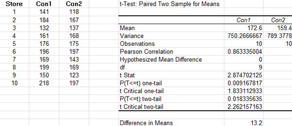
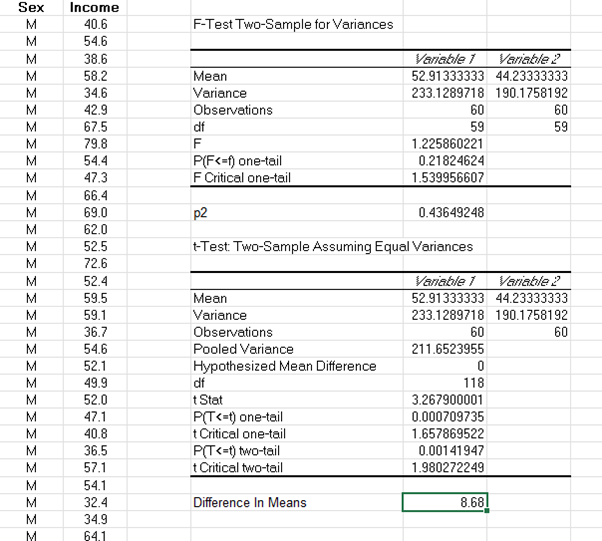
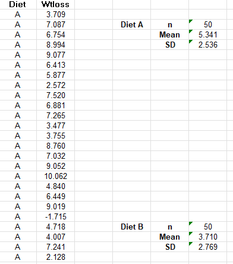
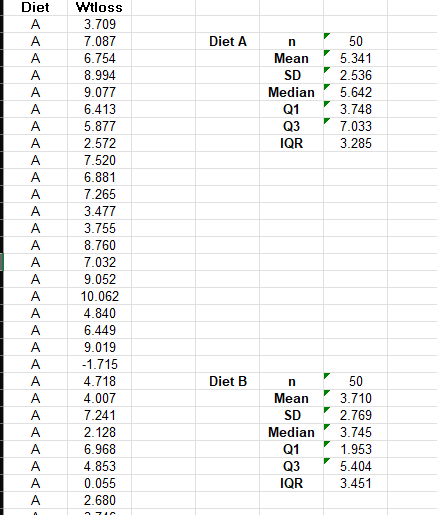
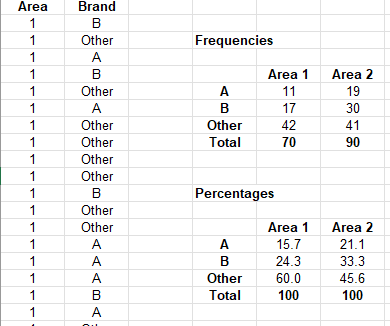

UNIT 7 WORKSHEETS
7.1 Hypothesis Testing Using Excel
The Related Samples T Test

If the test had been one-tailed on the effectiveness of Filter Agent 1, the p-value would be roughly half of the two-tailed test. This would provide stronger statistical evidence that Filter Agent 1 was more effective. However, if the observed mean impurity had instead favoured Filter Agent 2, then the one-tailed test would not have been significant, because the data
The INDEPENDENT Samples T Test would not support the stated hypothesis.

The F tests gave p = 0.218 > 0.05 so we do not reject equal variances and therefore use the two-sample assuming equal variances t-Test. Since t = 3.268 >1.658 and p < 0.001, we reject the hypothesis. In summary, there is strong evidence that the mean income for males exceeds those of females in this sample, with an estimate of 8.68 in the currency. This is valid under the assumption of independence, approximate normality and equal variances.
7.2 Summary Measures
7.2.1

Both Diets had the same sample sizes but on average, subjects using diet A lost more weight than those in diet B. Diet A also had more consistent weight loss throughout the 50, as seen by the lower standard deviation, this is however, an inconsiderable amount.
7.2.2

While the Q1 and Q3 had very different values, the IQR is mostly the same, meaning that the variability in the weights of the subjects in each diets are similar in spread.
7.2.3

Overall, Area 2 shows higher total consumption than Area 1. In both areas, the majority of consumers prefer other brands over A or B. However, Area 2 demonstrates a relatively stronger preference for Brands A and B compared to Area 1, which leans more heavily toward other brands.